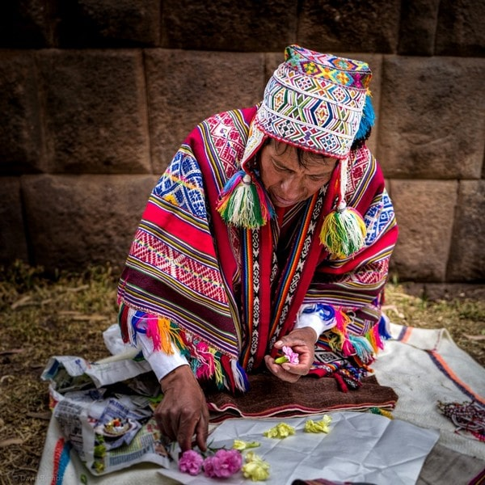

There is an ancient Inca legend that tells of ‘The Eagle and the Condor’. It states that from 1490 and for the following 500 years, the Eagle would become so powerful as to nearly wipe out the Condor, but that beginning in the year 1990, the possibility would arise for the Eagle and the Condor to come together and exchange knowledge, eliminating the duality that valued one way of understanding over another. Some have interpreted this legend to mean that the Eagle and the Condor represent human society dividing into two paths. The path of the Eagle is the path of the rational, material and masculine aspects of humanity and the path of the Condor is the intuitive, heartfelt and feminine aspect. The Eagle’s near elimination of the Condor can be interpreted as a metaphor for the 500-year oppression of indigenous people in the Americas and other parts of the world.
The paqo, or spiritual leaders, of the Q’ero people say that, beginning in 1990, the time would come for their beliefs to be shared with people who would arrive from outside of their villages. People would arrive from the North, who were thirsty for spiritual knowledge and a return to the sacred. These people would, in turn, share their technological and scientific ways of viewing the world with the South. When these belief systems came together, a new era of peace and understanding would arise for humanity. It is believed that the time of the fulfillment of the prophecy of the Eagle and Condor has now arrived. We, too, have seen a huge influx of spiritual seekers to Peru over the recent decades seeking to benefit from the kind of wisdom and understanding that still exists in this mystical country.